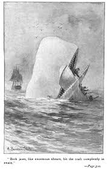
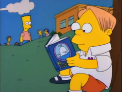
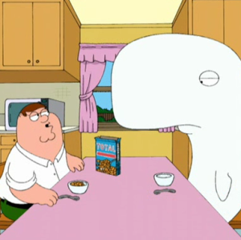

Moby Dick, by Herman Melville
What is Moby Dick?
Moby Dick is an 1851 Epic Novel written by Herman Melville. It follows the leader of Whaling Ship, Captain Ahab, who is determined to hunt down and kill the legendary white sperm whale "Moby Dick". It was published on October 18th 1851 in the UK and then the following month on November 14th, 1851 in the US, with a 210,000 word count. Moby Dick himself is probably the most iconic aspect of the book, and interpretations of its meaning range from the Judeo-Christian God to atheism and anything you can think off in between.
How popular was Moby Dick at the time?
During Herman Melville's life, only 3715 copies of Moby Dick were sold, the book was a flop! Earning only $1259 for Melville
Herman Melville
Born on August 1st 1819, Herman Melville was raised in New York, one of 7 siblings, his father supported the family by importing French Dry Goods,
however later he attempted to chance his hand in the Fur business in Alabama, this did not work, he later died two years later, leaving a bankrupt family.
Melville, along with all his siblings, left school to work odd jobs, in Melville's case, he worked on his uncle's farm, helping in teaching positinos, and working in a bank.
Melville always loved reading, once he left school, he read much more, falling in love with Shakespeare and Mythology, another story that stuck with him was the story of whaleship Essex, the story of a ship that was attacked by a whale and sunk. In 1839, at the age of 20, Melville took his first voyage across the Atlantic sea as a cabin boy on the merchant ship the St. Lawrence. After this expedition and a year exploring the West, Melville joined the crew of the whaling ship Acushnet in January of 1841.
In October 1844, Melville returned to his mother's house determined to write about his adventures. His adventures and travels, made his knowledge about the sea incredibly accurate, and he used it all to write his masterpiece.
He had written 3 Novels by the time of 1851, when Moby Dick was published, however as we learned, it was a flop.
After the book's failure, Melville lived in obscurity, his next novel was Pierre, was another failure, later Melville became depressed and he suffered much heartbreak and loss during the rest of his life, he later died on September 28th 1891, aged 82.
Popularity
During the early 20th century, critics began to rediscover Herman Melville's work, they quickly hailed his work as classics of American Literature. Today his work is taught about in school and his work is beloved, Melville is now one of the most recognized authors in the world.
Moby Dick in Pop Culture
In 1956, Moby Dick was adapted for a feature length film by Warner Bros, starring Hollywood Superstar Gregory Peck
The famous coffee chain Starbucks was actually named after a character in Moby Dick, a character in the novel named Starbuck who was the first mate of the pequod.
Moby Dick has also made several appearences in animated series, including Family Guy, Futurama, Tom and Jerry and The Simpsons.
 